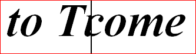

Pic.DrawSpecial (picID, x, y, mode, transition, duration : int)
Pic.DrawSpecial is used to draw a picture on the screen with aspecial effect such as a wipe, a slide, or a fade-in. The picture is drawn with the lower left corner at (x, y). The duration specifies how long thetransition should take in milliseconds. For example, a fade-in couldbe specified to last 1/2 a second by using a duration of 500.
The mode parameter is the same as in Pic.New and has one of the following values:
picCopy This draws the picture on top of what was underneath, obscuring it completely. picXor This draws the picture XORing it with the background. In DOS, you can use this function to do animation. Drawing an object on top of itself with XOR erases it and restores the background. picMerge This draws the picture like picCopy except that any occurrence of the background color in the picture is not drawn to the screen. This allows you to draw an irregularly-shaped object and draw it to the screen. picUnderMerge This draws the picture, but only where the background color was displayed underneath it. The effect of this is to make the picture appear to be displayed behind the background.
The transition parameter indicates the special effect and hasone of the following values:
picWipeLeftToRight The picture appears as a solid black bar sweeps from left toright, "revealing" the new picture as the screen underneaththe picture is replaced.
In the picture below, "to Turing" is replacing the "Welcome"underneath as the bar sweeps from left to right.

picWipeLeftToRight - half way through transition
picWipeRightToLeft, picWipeTopToBottom, picWipeBottomToTop As picWipeLeftToRight, except the bar sweeps in different directions. picWipeUpperLeftToLowerRight The picture appears as a solid black bar sweeps from the upperleft corner down to the lower right, "revealing" the new picture as the screen underneath the picture is replaced.
In the picture below "to Turing" is replacing the "Welcome"underneath as the bar sweeps from upper-left to lower-right.
picWipeUpperLeftToLowerRight - half way through transition
picWipeUpperRightToLowerLeft, picWipeLowerLeftToUpperRight, picWipeLowerRightToUpperLeft As picWipeLeftToRight, except the bar sweeps in different directions. picWipeCentreToEdge, picWipeCenterToEdge The picture appears inside an expanding black outlined box as it sweeps from the centre out to the edges, "revealing" the new picture as the screen underneath the picture is replaced.
In the picture below, "to Turing" is replacing the "Welcome"underneath as the box expands from the centre out.
picWipeCentreToEdge - half way through transition
picWipeLeftToRightNoBar, picWipeRightToLeftNoBar, picWipeTopToBottomNoBar, picWipeBottomToTopNoBar__picWipeUpperLeftToLowerRightNoBar, picWipeUpperRightToLowerLeftNoBar, picWipeLowerLeftToUpperRightNoBar, picWipeLowerRightToUpperLeftNoBar,picWipeCentreToEdgeNoBar, picWipeCenterToEdgeNoBar As the constants above, expect there is no bar to mark thesweep across. The bar generally looks better when displayingan image over top of a similar one. No bar is usuallypreferable when the images are completely different (as intwo photographs, and so on). picSlideLeftToRight The picture "slides in" from the left as a solid black bar sweeps from left to right, "pushing" the screen underneathoff the right edge of the drawing area.
In the picture below "to Turing" is replacing the "Welcome"originally present, "pushing" the "Welcome" to the rightas "to Turing" slides in from the left.

picSlideLeftToRight - half way through transition
picSlideRightToLeft, picSlideTopToBottom, picSlideBottomToTop As picSlideLeftToRight, except the bar sweeps in different directions. picSlideLeftToRightNoBar, picSlideRightToLeftNoBar, picSlideTopToBottomNoBar, picSlideBottomToTopNoBar As the constants above, expect there is no bar to mark thesweep across. The bar generally looks better when displayingan image over top of a similar one. No bar is oftenpreferable when the images are completely different (as intwo photographs, and so on). picGrowLeftToRight The picture "grows" from the left as a solid black bar sweeps from left to right, "squeezing" the screen underneathoff the right edge of the drawing area.
In the picture below "to Turing" is replacing the "Welcome"originally present, "squeezing" the "Welcome" to the rightas "to Turing" "grows" from the left.
picGrowLeftToRight - half way through transition
picGrowRightToLeft, picGrowTopToBottom, picGrowBottomToTop As picGrowLeftToRight, except the bar sweeps in different directions. picGrowCentreToEdge, picGrowCenterToEdge The picture "grows" from the centre as a outlined black boxsweeps from outward, replacing the screen underneath.
In the picture below "to Turing" is replacing the "Welcome"originally present, as "to Turing" grows for the centre.

picGrowCentreToEdge - half way through transition
picGrowLowerLeftToUpperRight The picture "grows" from the lower-left corner as a outlinedblack box sweeps right and upward, replacing the screen underneath.
In the picture below "to Turing" is replacing the "Welcome"originally present, as "to Turing" "grows" from the lower-left.
picGrowLowerLeftToUpperRight - half way through transition
picGrowUpperLeftToLowerRight, picGrowLowerRightToUpperLeft, picGrowUpperRightToLowerLeft As picGrowLowerLeftToUpperRight, except the box sweeps in different directions. picGrowLeftToRightNoBar, picGrowRightToLeftNoBar, picGrowTopToBottomNoBar, picGrowBottomToTopNoBar__picGrowUpperLeftToLowerRightNoBar, picGrowLowerLeftToUpperRightNoBar, picGrowUpperRightToLowerLeftNoBar, picGrowLowerRightToUpperLeftNoBar,picGrowCentreToEdgeNoBar, picGrowCenterToEdgeNoBar As the constants above, expect there is no bar to mark thesweep across. The bar generally looks better when displayingan image over top of a similar one. No bar is usuallypreferable when the images are completely different (as intwo photographs, and so on). picFadeIn The picture "fades in" over top of the image underneath it.At the end of the transition, the new image completely replaces the image underneath it.

picFadeIn - half way through transition
picBlend This transition is somewhat different because it doesn't takeany time to execute. Instead, picBlend causes thenew image to be blended with the background. The picBlend constant can be used by itself, in which case,the final image is 70% the new image, 30% the old image. Youcan also add a number from 1 to 100 to picBlend, in which case, the blend is whatever was added from (1-100) ofthe new image over top of the old image. (i.e. a transitionof picBlend + 15 would display an image that is composed of 15% the new image and 85% the old image.)
picBlend - red star blended with blue circle
The Pic.DrawSpecial requires a moderately fast machine to operate successfully (Pentium III or higher). The picFadeIn_and picBlend transitions do not work well on 8-bit (256 color)displays. On Microsoft Windows machines, you can determine the bit-depth of the display (the number of colors available) by selecting the Display control panel from the Start_ menu. You can also use the
**Config.Display** (**cdNumMaxColors**)
function to determine the bit-depth of the display (anything over 256 colors will produce acceptable results).
If the Pic.DrawSpecial call fails, Error.Last will return a non-zero value indicating the reason for the failure. Error.LastMsg will return a string which contains the textual version of the error.
The program draws a blue star on the screen, then a red circle, thenproceeds to have to have the two replace each other with a variety oftransitions.
var redID, blueID: int
var x, y : int
Draw.FillStar (50, 50, 150, 150, brightred)
redID := Pic.New (50, 50, 150, 150)
cls
Draw.FillOval (100, 100, 50, 50, brightblue)
blueID := Pic.New (50, 50, 150, 150)
Pic.DrawSpecial (redID, 50, 50, picCopy, picWipeLeftToRight, 500)
Pic.DrawSpecial (blueID, 50, 50, picCopy, picWipeTopToBottom, 500)
Pic.DrawSpecial (redID, 50, 50, picCopy, picSlideLeftToRight, 500)
Pic.DrawSpecial (blueID, 50, 50, picCopy, picSlideTopToBottom, 500)
Pic.DrawSpecial (redID, 50, 50, picCopy, picFadeIn, 1000)
Pic.DrawSpecial (blueID, 50, 50, picCopy, picBlend + 50, 0)
Pic.Free (redID)
Pic.Free (blueID)
The following program demonstrates each of the different special effects, first using pictures containing text, then picturesloaded from photographs, then both at once.
Exported qualified.
This means that you can only call the function by calling Pic.DrawSpecial, not by calling DrawSpecial.
pic_draw.html for information on the meaningof the mode argument.
pic_drawspecialback.html for information on how to continue executing the program while a specialeffect is occurring. This allows one to produce several specialeffects at once.